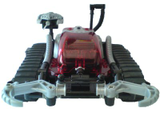

Lego Spybot
Archivierte Anleitung
Dieser Artikel wurde archiviert, da er - oder Teile daraus - nur noch unter einer älteren Ubuntu-Version nutzbar ist. Diese Anleitung wird vom Wiki-Team weder auf Richtigkeit überprüft noch anderweitig gepflegt. Zusätzlich wurde der Artikel für weitere Änderungen gesperrt.
Zum Verständnis dieses Artikels sind folgende Seiten hilfreich:

Lego Spybot nennt man die Lego-Roboter aus der Spybotics-Produktserie. Es handelt sich hierbei um kleine Roboter mit jeweils einem programmierbaren Legostein (I.R.M.) mit zwei Elektromotoren (für die Räder links und rechts), der in Lego-Technik-Elemente (Lochstangen, Verbindungselemente usw.) eingebaut wird. Als Sensoren hat er einen Berührungs- und Licht-Sensor. Zur Ausgabe hat er einen Laser (LED), eine Sound-Ausgabe sowie ein paar Status-LEDs. Steuerbar ist jeder Roboter der Serie mit einer Infrarot-Fernbedienung (Controller). Desweiteren verfügt der Spybot über einen undokumentierten Teammodus.
Zur Programmierung liegt eine Windows-CD-ROM sowie ein serielles Verbindungskabel (COM-Anschluss) bei. Über die Software lassen sich "Missionen" auf den Spybot übertragen und die Fernbedienung kann man darüber "programmieren". Desweiteren befindet sich die Bauanleitung für den Roboter auf der CD-ROM.
Leider lässt sich die die Software nicht mit Wine betreiben, da ein Erkennen des Spybots darüber nicht möglich ist. Allerdings kann das Lego-Programm nicht mal unter Windows ohne regelmäßige Abstürze betrieben werden.
Bauanleitung¶
Die Bauanleitung für den Spybot kann man ja nun nicht über die Software einsehen. Allerdings befinden sich auf der CD-ROM im Unterverzeichnis Shared/build alle nötigen Schritte als Bilddateien. Dabei sind die Dateien so aufgebaut: Dateien mit "3806" am Anfang für den blauen Spybot, Dateien mit "3807" für den roten, Dateien mit "3808" für den pinken und Dateien mit "3809" für den grünen Spybot. Wer die Informationen zu den jeweils benötigten Bauteilen will, findet diese mit dem Prefix "E" und darauffolgend die Modellnummer für jeden Schritt. Zur Wiedergabe der QuickTime-Filme wird das passende Codec benötigt.
Programmierung (NQC)¶
Die fertigen Missionen von Lego kann man leider nicht nutzen, da das dazu benötigte Programm ja nicht läuft. Aber man kann sich selbst Programme für den Spybot programmieren. Dazu kann man z.B. die Programmiersprache NQC verwenden. NQC ist auch ein vollwertiger Ersatz für Mindscript, der Programmiersprache eines Lego-Programmes (für Windows, Download  ) für die Mindstorms-Serie, welches in der neueren Version auch Spybots unterstützt. Das Programmieren kann in jedem beliebigen Texteditor [1] geschehen. Im Folgendem wird die Sprache näher erläutert.
) für die Mindstorms-Serie, welches in der neueren Version auch Spybots unterstützt. Das Programmieren kann in jedem beliebigen Texteditor [1] geschehen. Im Folgendem wird die Sprache näher erläutert.
Syntax¶
Der NQC-Syntac ist dem Syntax von C-Programmen sehr ähnlich. Anweisungen werden durch ein Semikolon abgeschlossen und Blöcke stehen in geschweiften Klammern { }. Auch gibt es ein- und mehrzeilige Kommentare. Es können if-, while- und for-Schleifen verwendet werden. Außerdem gibt es die Funktionen repeat und until.
Aufbau der NQC-Datei¶
Jede Datei für den Spybot muss so aufgebaut sein:
#include "spy.nqh"
task main()
{
Befehle
}
Das heißt, der beim Starten des Programmes auf dem Spybot zu startende Task muss main() heißen. Oft wird auch die Datei spy.nqh beigefügt, welche sich im selben Verzeichnis befinden muss. Darin können globale Variablen, Funktionen u.ä. gespeichert werden, welche beim Schreiben eines Spybot-Programmes nützlich sein können. Die Datei spy.nqh wurde bei früheren NQC-Versionen mitgeliefert, mittlerweile sind alle Funktionen der Datei in den NQC-Kompiler übernommen worden. Somit wird diese Datei nicht mehr nötig. Es sind aber zusätzliche Headerdateien verfügbar, welche man sich hier  als Archiv herunterladen kann. Mehr Informationen zur den Spybot-API-Funktionen findet man im NQC-Guide des Herstellers.
als Archiv herunterladen kann. Mehr Informationen zur den Spybot-API-Funktionen findet man im NQC-Guide des Herstellers.
Befehle¶
Eine Übersicht der Befehle findet sich auf den unter Links angegebenen Seiten.
Beispiel¶
int sound=1;
task main()
{
start move; // startet den move-Task
start playsound; // startet den sound-Task
}
task move()
{
OnFwd(OUT_A+OUT_B); // beide Motoren vorwärts
Wait(100); // 1 Sekunden fahren
OnRev(OUT_A+OUT_B); // beide Motoren rückwärts
Wait(300); // 3 Sekunden fahren
OnFwd(OUT_A+OUT_B); // beide Motoren vorwärts
Wait(200); // 2 Sekunden fahren
Off(OUT_A+OUT_B); // anhalten
SetPower(OUT_A, 7); // linke Motoren-Geschwindigkeit bleibt maximal
SetPower(OUT_B, 2); // rechte Motoren-Geschwindigkeit wird gedrosselt
OnFwd(OUT_A+OUT_B); // beide Motoren vorwärts => Linkskurve
Wait(200); // 2 Sekunden fahren
SetPower(OUT_A+OUT_B, 7); // beide Motoren gleich schnell => gerade
Wait(70); // 0,7 Sekunden Zeit zum Beschleunigen
Float(OUT_A+OUT_B); // auslaufen lassen
sound=0; // Sound abschalten
}
task playsound() // task darf nicht wie die Variable auch sound heißen
{
PlaySound(SOUND_UP); // Startsound abspielen
Wait(100); // 1 Sekunde warten
while(sound==1) // solange wiederhohlen, bis move() den Sound abstellt
{
PlaySound(SOUND_DOUBLE_BEEP); // Sound abspielen
Wait(50); // 0,5 Sekunden warten
}
PlaySound(SOUND_DOWN); // Fertigsound abspielen
Wait(100); // 1 Sekunde warten
StopAllTasks(); // stoppt alle Tasks
}Übertragung auf den Spybot (NQC)¶
Zum Kompilieren und Übertragen des geschriebene Quellcodes sollte man das Programm NQC (gleichnamig wie die Programmiersprache) verwenden.
Installation¶
Um NQC verwenden zu können muss folgendes Paket installiert [5] werden:
nqc (universe, [6])
manuelle Installation¶
Will man die neueste Version von NQC verwenden, kann man sich auch den aktuellen Quellcode selbst kompilieren und installieren:
Zuerst lädt man den Quellcode des Programmes von der Herstellerseite
herunter. Nun muss der Quellcode kompiliert [2] und installiert [3] werden.
Das Konsolen-Programm lässt sich nun mit dem Befehl nqc im Terminal [3] aufrufen.
Verwendung¶
Um einen Quellcode auf den Spybot zu laden, gibt man folgenden Befehl im Terminal [3] ein:
nqc -TSpy -d -S[Portname] [Dateiname]
Hierbei wird als Portname der richtige Pfad zum Port im Ubuntu-Dateisystem angegeben, also z.B. /dev/ttyS0, /dev/ttyS1, ... bzw. bei einem USB-Seriell-Adapter /dev/ttyUSB0.
Natürlich muss zur Übertragung der Roboter angeschalten und mit dem Computer verbunden sein.
Experten-Info:
Der Parameter -TSpy wird angegeben, damit das Programm weiß, dass es sich um ein Spybotics-Programm handelt. Der Parameter -d bedeutet, dass das kompilierte Programm gleich auf den Spybot geladen wird. Den Parameter -S[Portname] zur Angabe des Ports, an dem der Roboter angeschlossen ist, kann man auch weglassen, dann wird standardmäßig der erste Port verwendet (/dev/ttyS0). Mehr Parameter erfährt man mit dem Befehl nqc -help.
Beispiel¶
nqc -TSpy -d -S/dev/ttyUSB0 beispiel.nqc
Hier wird der Quellcode aus der Datei beispiel.nqc kompiliert und über einen USB-Seriell-Adapter auf den Spybot übertragen.
Das Programm kann sofort nach der Übertragung durch ein Drücken auf die graue Start-Taste des eingeschalteten Spybots gestartet werden.

- Erstellt mit Inyoka
-
 2004 – 2017 ubuntuusers.de • Einige Rechte vorbehalten
2004 – 2017 ubuntuusers.de • Einige Rechte vorbehalten
Lizenz • Kontakt • Datenschutz • Impressum • Serverstatus -
Serverhousing gespendet von